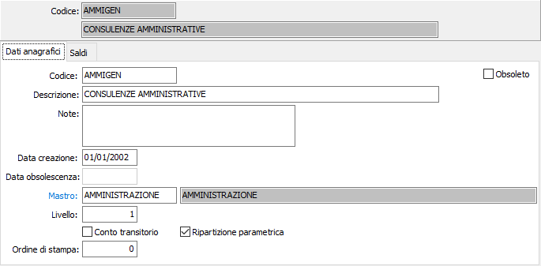

Dati anagrafici

CODICE: codice alfanumerico di 15 caratteri alfanumerici che individua il centro di costo/ricavo in esame. Su questo campo sono attive le funzioni di ricerca (F9).
DESCRIZIONE: campo alfanumerico di 50 caratteri per descrivere il centro C/R.
NOTE: campo note su più righe per inserire eventuali annotazioni in merito all’utilizzazione del centro C/R.
DATA CREAZIONE: indica la data in cui il codice è stato caricato. Al momento del caricamento di un nuovo record in questo campo viene proposta la data di sistema.
DATA OBSOLESCENZA: indica la data in cui il codice è stato dichiarato obsoleto.
MASTRO: codice alfanumerico di 15 caratteri alfanumerici che individua il mastro al quale il centro è riferito. Su questo campo sono attive le funzioni di ricerca (F9) ed accesso interattivo alla tabella collegata (CTRL+W).
LIVELLO: campo numerico che identifica il livello del centro C/R. Il livello zero identifica un centro ti tipo diretto, non ribaltabile, i livelli da 1 a 99 individuano centri di tipo intermedio.
CONTO TRANSITORIO: se presente la spunta identifica un centro C/R. di tipo transitorio.
RIPARTIZIONE PARAMETRICA: definisce il metodo di ripartizione del centro C/R. Se presente la spunta la ripartizione avverrà per parametri, altrimenti in percentuale.
ORDINE DI STAMPA: indica il numero d'ordine valido per l'ordinamento in fase di stampa o visualizzazione piano dei conti analitico.
OBSOLETO: flag attivabile dall’utente per inibire il possibile utilizzo dell’elemento di tabella in esame nelle successive transazioni. Spuntando la casella sarà automaticamente assegnata alla data obsolescenza la data di sistema.